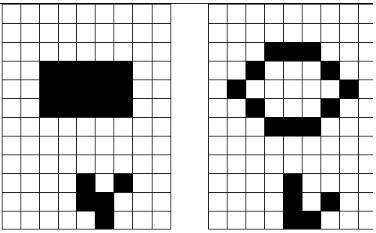

Para efeitos da nota atribuida à resolução de exercícios ao longo do semestre - Submeter até 23:59 de 20 de Novembro
(o problema continuará depois disponível para submissão, mas sem contar para a nota)
[para perceber o contexto do problema deve ler o guião da aula #04]
O Jogo da Vida (Game of Life ou Life) é um autómato celular proposto em 1970 pelo matemático britânico John Horton Connway. Na realidade, trata-se de uma simulação e não de um jogo com jogadores. Desenvolve-se numa grelha infinita, na qual cada célula pode estar ocupada por um organismo ou não. Células ocupadas dizem-se que estão vivas e as não ocupadas dizem-se mortas. Em cada geração as células que estão vivas mudam o seu estado em função do número de células vizinhas que estão vivas de acordo com as seguintes regras:
As figuras seguintes ilustram dois estados consecutivos de uma configuração do jogo da vida.

Neste problema vamos considerar que a grelha é finita e que as células que a envolvem estão sempre mortas.A primeira linha contém três inteiros positivos: o número de linhas L e de colunas C que determinam a dimensão da grelha do jogo e o número de iterações I que deverá realizar.
Seguem-se L linhas de caracteres a representar o estado actual do jogo. As células mortas estão representadas por '.' e as vivas por 'O'.
Deve imprimir o estado do jogo ao fim de I iterações, isto é, imprimir a matriz que representa a grelha do jogo com as células mortas marcadas com '.' e as células vivas com 'O'.
| Input | Output |
|---|---|
5 5 5 ..... ..... .OOO. ..... ..... |
..... ..O.. ..O.. ..O.. ..... |
Estruturas de Dados (CC1007)
DCC/FCUP - Faculdade de Ciências da Universidade do Porto